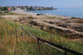
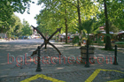
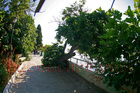
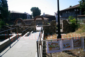
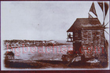

Плаж Созопол - Пътеводител
За Созопол
Созопол е древен град с над 2600 години история. Това място предлага стар град UNESCO, множество плажове, културни събития, което го прави идеално за любители на история, култура, семейства. Българското Черноморие простира на 378 километра и Созопол има своя уникален характер и атракции.
Какво да очаквате
Созопол има няколко плажа - Централния плаж в новата част на града е широк пясъчен плаж с отлична инфраструктура, плаж Хармани на 1 км южно от града е по-тих и просторен, а малките заливчета около стария град са идеални за плуване и гмуркане. Водата е изключително чиста благодарение на скалистото дъно. Старият град предлага уникална атмосфера с дървени къщи от XIX век, многобройни художествени галерии и традиционни механи. През септември се провежда известният фестивал Аполония с концерти и изложби.
Как да стигнете и практична информация
Созопол се намира на 35 км южно от Бургас (летище BOJ). Редовни автобуси тръгват от автогара Бургас през цялото лято на всеки 30 минути, пътуването отнема 45 минути и струва около 6 лв. Таксиметрова услуга от летището струва 40-50 лв. Настаняването в стария град е по-скъпо (100-200 лв/нощувка) но предлага автентично изживяване, докато хотелите в новата част са по-достъпни (60-120 лв/нощувка). Паркингът в центъра е ограничен, препоръчва се използване на платени паркинги (15-20 лв/ден).
Близки атракции
Освен плажа, посетителите могат да разгледат околните забележителности. Българският бряг съчетава природна красота с исторически места, традиционни села и възможности за туризъм, водни спортове и културни преживявания.
Най-добро време за посещение
Юни и септември предлагат отлично време с по-малко туристи и по-добри цени в сравнение с пиковите юли-август. Водата е достатъчно топла за комфортно плуване от средата на юни до средата на септември. За най-тихото преживяване и най-добра стойност, помислете за края на май или началото на октомври.
Съвети за посетители
Фотогалерия
Разгледайте нашата колекция от снимки от Созопол, показващи плажа, съоръженията и атмосферата. Тези автентични изображения ви помагат да разберете какво да очаквате и да планирате посещението си ефективно.
Различен вкус
Крепостната стена
Лунна светлина
Плажът след харманите
Водната пързалка
Созопол
Плаж Харманите- 
Исторически изкопки
Унищожен- 
Котва
Палми
Параклис
Централния плаж
Стария град
Скали- 
Созопол
Крепостната стена през деня
Созопол
Созопол
Созопол
Созопол
Созопол
Созопол
Созопол
Созопол
Созопол
Рибарство
Созопол
Яхти
Паваж- 
Арт галерии
Архитектура
Созопол
Стара снимка на пристанището
Созопол- 
Стара снимка на вятърната мелница
Стара снимка на Созопол
Созопол
Карта
Созопол